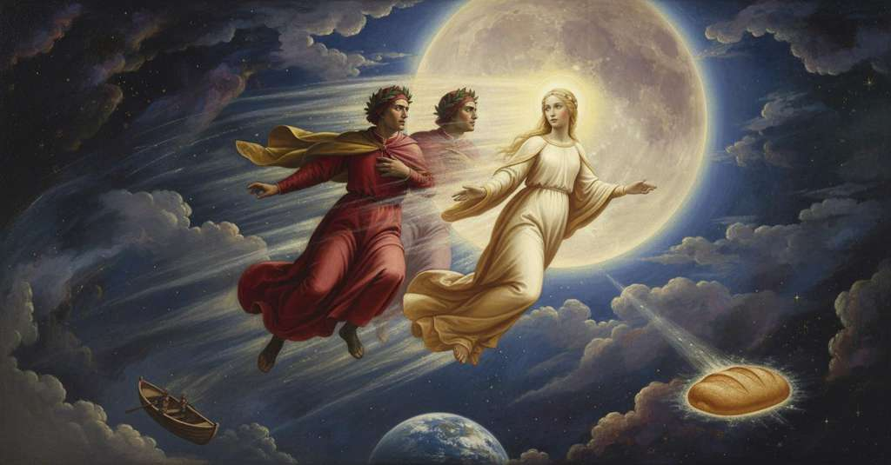

Paradiso — Canto 2

After ascending with Beatrice into the Moon, Dante's incorrect theory about its dark spots is refuted and replaced by her complex metaphysical explanation involving the differentiated influence of divine virtue. 月に到着した詩人は、月の斑点について物理的な推測を述べるが、ベアトリーチェはそれを論破し、神学的な真の原因を説き明かす。
1
O voi che siete in piccioletta barca,
O you who are in a little boat,
おお、汝ら小舟に乗りて、
2
desiderosi d’ascoltar, seguiti
eager to listen, having followed
聞くことを望み、後に続く者たちよ、
3
dietro al mio legno che cantando varca,
behind my ship that, singing, crosses,
歌いながら渡る我が船の
4
tornate a riveder li vostri liti:
turn back to see your shores again:
汝らの岸辺を見に引き返すがよい。
5
non vi mettete in pelago, ché forse,
do not set out on the deep sea, for perhaps,
大海原に乗り出すなかれ、さもなくば恐らくは、
6
perdendo me, rimarreste smarriti.
losing me, you would be left bewildered.
我を見失い、道に迷い果てるであろう。
7
L’acqua ch’io prendo già mai non si corse;
The water that I take was never sailed before;
我が進む水路は未だ誰も航行せしことなし。
8
Minerva spira, e conducemi Appollo,
Minerva breathes, and Apollo leads me,
ミネルヴァは息を吹き込み、アポロは我を導き、
9
e nove Muse mi dimostran l’Orse.
and the nine Muses point out the Bears to me.
そして九人のムーサたちは我に両熊座を示す。
10
Voialtri pochi che drizzaste il collo
You other few who early craned your necks
汝ら、早くから首を伸ばした少数の者たちよ、
11
per tempo al pan de li angeli, del quale
for the bread of the angels, on which
天使らのパンへと。それによって人は
12
vivesi qui ma non sen vien satollo,
one lives here but is never sated,
ここに生きるが、満ち足りることはない。
13
metter potete ben per l’alto sale
you may indeed put upon the high salt
汝らはまことに高き海原へと
14
vostro navigio, servando mio solco
your own vessel, keeping to my furrow
汝らの船を進めるがよい、我が航跡を守り
15
dinanzi a l’acqua che ritorna equale.
before the water turns smooth again.
再び平らになる水の面の前を。
16
Que’ glorïosi che passaro al Colco
Those glorious ones who passed to Colchis
コルコへと渡ったかの栄光ある者たちも
17
non s’ammiraron come voi farete,
were not as struck with wonder as you shall be,
汝らが驚くほどには驚かなかった、
18
quando Iasón vider fatto bifolco.
when they saw Jason become a plowman.
イアソンが農夫となったのを見た時に。
19
La concreata e perpetüa sete
The innate and perpetual thirst
神の形をした王国への、生まれながらの絶え間ない渇きが
20
del deïforme regno cen portava
for the God-formed kingdom carried us
我らを運んでいた、
21
veloci quasi come ’l ciel vedete.
swiftly, almost as you see the heavens move.
君たちが見る天のように速く。
22
Beatrice in suso, e io in lei guardava;
Beatrice was looking up, and I at her;
ベアトリーチェは上を、そして私は彼女を見つめていた。
23
e forse in tanto in quanto un quadrel posa
and perhaps in the time an arrow rests,
そしておそらく、矢が留まり、
24
e vola e da la noce si dischiava,
flies, and is unloosed from the bow-nut,
飛び、弩の弦枕から放たれるほどの間に、
25
giunto mi vidi ove mirabil cosa
I saw myself arrived where a marvelous thing
私は着いたと気づいた、そこでは驚くべきものが
26
mi torse il viso a sé; e però quella
drew my face to itself; and she from whom
私の顔を自らに向けさせた。それゆえ、かの人は、
27
cui non potea mia cura essere ascosa,
my own concern could not be hidden,
その人には私の気遣いを隠すことはできなかったが、
28
volta ver’ me, sì lieta come bella,
turned to me, as joyful as she was fair,
私に向き直り、美しいのと同じくらい喜びに満ちて、
29
«Drizza la mente in Dio grata», mi disse,
"Direct your mind in gratitude to God," she said,
「神に感謝の心を向けなさい」と彼女は言った、
30
«che n’ha congiunti con la prima stella».
"who has joined us with the first star."
「我らを第一の星へと結びつけてくださったのだから」。
31
Parev’ a me che nube ne coprisse
It seemed to me that a cloud covered us,
私には思われた、雲が我らを覆っていると、
32
lucida, spessa, solida e pulita,
luminous, dense, solid, and polished,
輝き、厚く、堅固で、磨かれた雲が、
33
quasi adamante che lo sol ferisse.
almost like a diamond that the sun had struck.
あたかも太陽に打たれた金剛石のように。
34
Per entro sé l’etterna margarita
Within itself the eternal pearl
その内部へ、永遠の真珠は
35
ne ricevette, com’ acqua recepe
received us, as water receives
我らを受け入れた、水が光の
36
raggio di luce permanendo unita.
a ray of light, remaining whole.
筋を受け入れるように、一体のまま留まりながら。
37
S’io era corpo, e qui non si concepe
If I was body, and here we cannot conceive
もし私が肉体であり、そしてここでは理解しえない、
38
com’ una dimensione altra patio,
how one dimension suffered another,
一つの次元が他の次元をいかにして許容したか、
39
ch’esser convien se corpo in corpo repe,
which must be if body enters body,
肉体が肉体に潜り込むのなら、そうあらねばならぬが、
40
accender ne dovria più il disio
it ought to kindle in us more the desire
我らの内には、より一層の願望を燃え立たせるべきだ、
41
di veder quella essenza in che si vede
to see that Essence in which is seen
かの存在を見る願望を、そこには見られるのだ、
42
come nostra natura e Dio s’unio.
how our nature and God were united.
我らの本性と神がいかにして一つになったかが。
43
Lì si vedrà ciò che tenem per fede,
There we shall see what we now hold by faith,
そこでは、我らが信仰によって保つものが見られるだろう、
44
non dimostrato, ma fia per sé noto
not demonstrated, but known in itself,
証明されてではなく、自ずから知られるだろう、
45
a guisa del ver primo che l’uom crede.
like the first truth that a man believes.
人が信じる第一の真理のように。
46
Io rispuosi: «Madonna, sì devoto
I answered: "My lady, as devoutly
私は答えた。「奥方様、私がなしうる限り
47
com’ esser posso più, ringrazio lui
as I can possibly be, I thank Him
最大の敬虔さをもって、あの方に感謝いたします、
48
lo qual dal mortal mondo m’ha remoto.
who has removed me from the mortal world.
死すべき世界から私を遠ざけてくださった方に。
49
Ma ditemi: che son li segni bui
But tell me: what are the dark marks
しかし、お教えください。この天体の
50
di questo corpo, che là giuso in terra
of this body, which down there on earth
暗い印とは何なのでしょうか、地上では
51
fan di Cain favoleggiare altrui?».
make others tell the fable of Cain?"
人々がカインの作り話をする原因となっているものは？」。
52
Ella sorrise alquanto, e poi «S’elli erra
She smiled a little, and then: "If the opinion,"
彼女はいくぶん微笑み、そして「もし、
53
l’oppinïon», mi disse, «d’i mortali
she said, "of mortals errs
死すべき者たちの意見が」と彼女は言った、「誤るとしても、
54
dove chiave di senso non diserra,
where the key of sense does not unlock,
感覚の鍵が開かないところでは、
55
certo non ti dovrien punger li strali
surely the arrows of wonder should not now
確かに、もはや驚きの矢が
56
d’ammirazione omai, poi dietro ai sensi
prick you, since even following the senses
君を刺すべきではない、なぜなら感覚の後に
57
vedi che la ragione ha corte l’ali.
you see that reason has short wings.
理性の翼が短いことがわかるのだから。
58
Ma dimmi quel che tu da te ne pensi».
But tell me what you yourself think of it."
だが、君自身はそれについてどう思うか言いなさい」。
59
E io: «Ciò che n’appar qua sù diverso
And I: "What appears to us diverse up here
そして私は。「この天上に見えるものが異なって見えるのは、
60
credo che fanno i corpi rari e densi».
I believe is caused by bodies rare and dense."
希薄な物体と稠密な物体が原因だと私は信じます」。
61
Ed ella: «Certo assai vedrai sommerso
And she: “Certainly you will see submerged
そして彼女は言った。「確かにあなたは見るでしょう、深く沈んでいるのを
62
nel falso il creder tuo, se bene ascolti
in falsehood your belief, if you listen well
偽りの中に、あなたの信じることが。もしよく聞くならば
63
l’argomentar ch’io li farò avverso.
to the argument that I will make against it.
私がそれに対して行う議論を。
64
La spera ottava vi dimostra molti
The eighth sphere shows you many
第八天球はあなたに示すでしょう、多くの
65
lumi, li quali e nel quale e nel quanto
lights, which in their kind and in their quantity
光を。それらは、その質においても量においても
66
notar si posson di diversi volti.
can be noted to have different aspects.
異なる相貌を持つと認められるのです。
67
Se raro e denso ciò facesser tanto,
If rare and dense alone caused this,
もし希薄と稠密だけがそれを引き起こすのなら、
68
una sola virtù sarebbe in tutti,
one single virtue would be in them all,
一つの徳だけが全てにあるでしょう、
69
più e men distributa e altrettanto.
more and less and equally distributed.
多かれ少なかれ、そして同じように分配されて。
70
Virtù diverse esser convegnon frutti
Different virtues must be the fruits
異なる徳は、結果であるはずです
71
di princìpi formali, e quei, for ch’uno,
of formal principles, and those, save one,
形相的原理の。そしてそれらは、一つを除いて、
72
seguiterieno a tua ragion distrutti.
would by your reasoning be destroyed.
あなたの論理に従えば破壊されるでしょう。
73
Ancor, se raro fosse di quel bruno
Again, if rarity were the cause of that dark
さらに、もし希薄がその暗さの
74
cagion che tu dimandi, o d’oltre in parte
mark you ask about, either this planet
原因であるならば、あなたが問うように、一部分が完全に
75
fora di sua materia sì digiuno
would be in part so wanting of its matter
その物質を欠いているか
76
esto pianeto, o, sì come comparte
all the way through, or, as a body shares
この惑星は。あるいは、体が
77
lo grasso e ’l magro un corpo, così questo
the fat and lean, so this one would
脂肪と赤身を分かち持つように、これもまた
78
nel suo volume cangerebbe carte.
alternate the pages in its volume.
その体積の中で紙葉を変えるでしょう。
79
Se ’l primo fosse, fora manifesto
If the first were true, it would be manifest
もし最初の場合なら、明らかになるでしょう
80
ne l’eclissi del sol, per trasparere
in the sun’s eclipses, by the light
日食の際に、透けて見えることで
81
lo lume come in altro raro ingesto.
shining through, as when put in other rarity.
光が、他の希薄なものに差し込むように。
82
Questo non è: però è da vedere
This is not so: therefore one must look to
そうではありません。ゆえに見るべきは
83
de l’altro; e s’elli avvien ch’io l’altro cassi,
the other; and if it happens that I annul the other,
もう一方です。そしてもし私がもう一方を論破すれば、
84
falsificato fia lo tuo parere.
your opinion will be proven false.
あなたの意見は偽りとなるでしょう。
85
S’elli è che questo raro non trapassi,
If it is that this rarity does not pass through,
もしこの希薄が貫通しないのであれば、
86
esser conviene un termine da onde
there must be a limit from which
境界があるはずです、そこから
87
lo suo contrario più passar non lassi;
its contrary allows it to pass no further;
その反対物（稠密）が通させない。
88
e indi l’altrui raggio si rifonde
and from there the other’s ray is reflected
そしてそこから他者の光線は反射するのです
89
così come color torna per vetro
just as color returns from glass
色がガラスから返ってくるように
90
lo qual di retro a sé piombo nasconde.
which has lead concealed behind it.
その背後に鉛を隠している。
91
Or dirai tu ch’el si dimostra tetro
Now you will say that the ray shows itself
さてあなたは言うでしょう、暗く見えると
92
ivi lo raggio più che in altre parti,
more dim there than in other parts,
そこでは光線が、他の部分よりも
93
per esser lì refratto più a retro.
because it is reflected from more far back.
より後方から反射されるために。
94
Da questa instanza può deliberarti
From this objection you can be freed
この反論からあなたを解放できるのは
95
esperïenza, se già mai la provi,
by an experiment, if you ever try it,
実験です、もしあなたが一度でも試みるなら、
96
ch’esser suol fonte ai rivi di vostr’ arti.
which is wont to be the fount of your arts’ streams.
それはあなた方の術の川の源泉となりうるものです。
97
Tre specchi prenderai; e i due rimovi
You shall take three mirrors; and two of them remove
三つの鏡を取りなさい。そして二つを離しなさい
98
da te d’un modo, e l’altro, più rimosso,
from you an equal distance, and the third, more removed,
あなたから同じように。そしてもう一つを、より遠くに、
99
tr’ambo li primi li occhi tuoi ritrovi.
let your eyes find between the first two.
最初の二つの間にあなたの目が見えるように置きなさい。
100
Rivolto ad essi, fa che dopo il dosso
Turned toward them, have a light stand behind
それらに向かい、あなたの背後に
101
ti stea un lume che i tre specchi accenda
your back that lights the three mirrors
三つの鏡を照らす光を置きなさい
102
e torni a te da tutti ripercosso.
and returns to you reflected from them all.
そして全てから反射されてあなたに戻るように。
103
Ben che nel quanto tanto non si stenda
Although in quantity it does not extend as much,
たとえ量（大きさ）においてはそれほど届かなくても
104
la vista più lontana, lì vedrai
the more distant image, there you will see
最も遠い光は、そこに見るでしょう
105
come convien ch’igualmente risplenda.
that it must shine with equal brightness.
いかに等しく輝かねばならないかを。
106
Or, come ai colpi de li caldi rai
Now, as beneath the strokes of the hot rays
さて、熱い光線の一撃によって
107
de la neve riman nudo il suggetto
the substance of the snow remains stripped bare
雪の素地が裸にされるように
108
e dal colore e dal freddo primai,
both of its color and its former cold,
そして元の色と冷たさから、
109
così rimaso te ne l’intelletto
so you, remaining in your intellect,
そのように残されたあなたの知性に
110
voglio informar di luce sì vivace,
I wish to inform with a light so vivid
私はかくも活発な光を注ぎ込みたいのです、
111
che ti tremolerà nel suo aspetto.
that it will tremble as you look on it.
その姿にあなたは震えるでしょう。
112
Dentro dal ciel de la divina pace
Within the heaven of the divine peace
「神の平和の天の内には
113
si gira un corpo ne la cui virtute
revolves a body in whose virtue
一つの天体が巡り、その徳のうちに
114
l’esser di tutto suo contento giace.
the being of all its content lies.
その内部にある全てのものの存在が宿る。
115
Lo ciel seguente, c’ha tante vedute,
The heaven that follows, which has so many sights,
それに続く天は、数多の星々を持つが、
116
quell’ esser parte per diverse essenze,
that being divides among diverse essences,
その存在を、様々な本質へと分け与え、
117
da lui distratte e da lui contenute.
distinct from it and contained by it.
彼から引き出され、彼に内包される。
118
Li altri giron per varie differenze
The other spheres through various differences
他の天球は、様々な差異を通じて
119
le distinzion che dentro da sé hanno
the distinctions which they have within themselves
自らのうちに持つ区別を
120
dispongono a lor fini e lor semenze.
dispose to their ends and their seeds.
それぞれの目的と種子へと配分する。
121
Questi organi del mondo così vanno,
These organs of the world so go,
世界のこれらの諸機関は、このように
122
come tu vedi omai, di grado in grado,
as you now see, from grade to grade,
今やそなたが見るごとく、段階を経て動き、
123
che di sù prendono e di sotto fanno.
that from above they take and below they make.
上から力を受け、下へと作用するのだ。
124
Riguarda bene omai sì com’ io vado
Regard well now how I proceed
さて、よく見るがよい、私がいかにして
125
per questo loco al vero che disiri,
through this place to the truth that you desire,
この論理の道を経て、そなたの望む真理へ至るかを、
126
sì che poi sappi sol tener lo guado.
so that then you may know how to hold the ford alone.
そうすれば後には独りで浅瀬を渡れるであろう。
127
Lo moto e la virtù d’i santi giri,
The motion and the virtue of the holy spheres,
聖なる天球の動きと徳は、
128
come dal fabbro l’arte del martello,
like from the smith the art of the hammer,
鍛冶屋から槌の技がもたらされるように、
129
da’ beati motor convien che spiri;
from the blessed movers must needs be breathed;
祝福された動者たちから吹き込まれるのだ。
130
e ’l ciel cui tanti lumi fanno bello,
and the heaven which so many lights make beautiful,
そして、数多の光が美しく飾る天は、
131
de la mente profonda che lui volve
from the profound mind that turns it
それを回す深遠なる知性から
132
prende l’image e fassene suggello.
takes the image and makes of it a seal.
その姿を受け取り、自らをその印とする。
133
E come l’alma dentro a vostra polve
And as the soul within your dust
そして、魂が汝らの塵（肉体）の中で
134
per differenti membra e conformate
through different members and conformed
様々な肢体を通じて、それぞれに適合し
135
a diverse potenze si risolve,
to diverse powers resolves itself,
様々な力へと分けられるように、
136
così l’intelligenza sua bontate
so the intelligence its goodness
そのように知性はその善性を
137
multiplicata per le stelle spiega,
multiplied through the stars unfolds,
星々を通じて増殖させ、展開し、
138
girando sé sovra sua unitate.
turning itself upon its own unity.
自らの統一性の上で自らを回転させる。
139
Virtù diversa fa diversa lega
Diverse virtue makes a diverse alloy
異なる徳は、異なる合金を作る
140
col prezïoso corpo ch’ella avviva,
with the precious body that it enlivens,
それが命を与える貴き天体と、
141
nel qual, sì come vita in voi, si lega.
in which, just as life in you, it is bound.
その中で、汝らの中の生命のように、結びつくのだ。
142
Per la natura lieta onde deriva,
Through the joyful nature from which it derives,
それが由来する喜ばしき本性ゆえに、
143
la virtù mista per lo corpo luce
the mingled virtue shines through the body
混じり合った徳は天体を通して輝く
144
come letizia per pupilla viva.
as gladness through a living pupil.
あたかも喜びが生ける瞳を通して輝くように。
145
Da essa vien ciò che da luce a luce
From this comes that which from light to light
そこから、光から光へと
146
par differente, non da denso e raro;
appears different, not from dense and rare;
異なって見えるものが生じる、濃淡からではなく。
147
essa è formal principio che produce,
it is the formal principle which produces,
それこそが、生み出す形相的な原理なのだ、
148
conforme a sua bontà, lo turbo e ’l chiaro».
according to its goodness, the dark and the bright».
自らの善性に応じて、暗きと明きを」